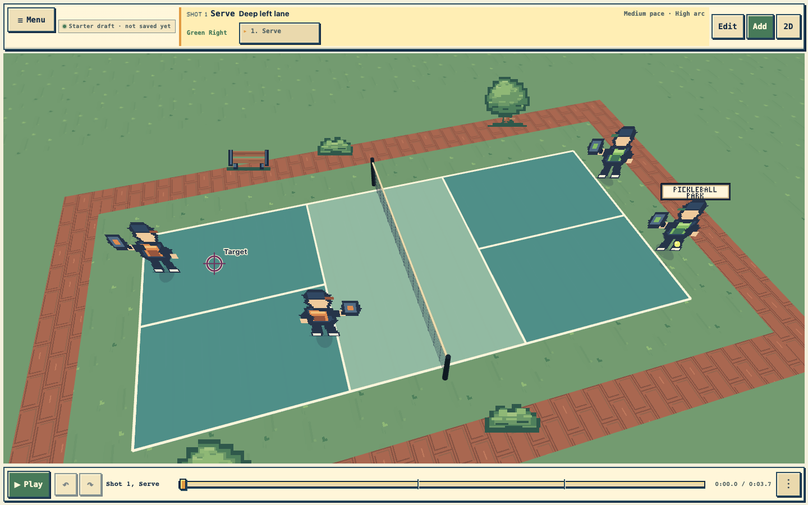
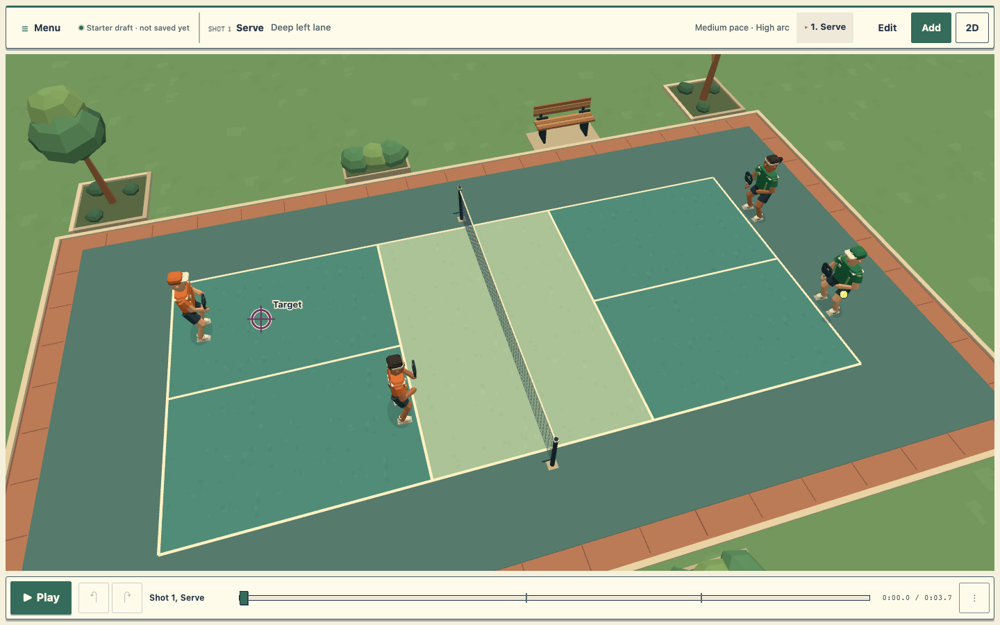
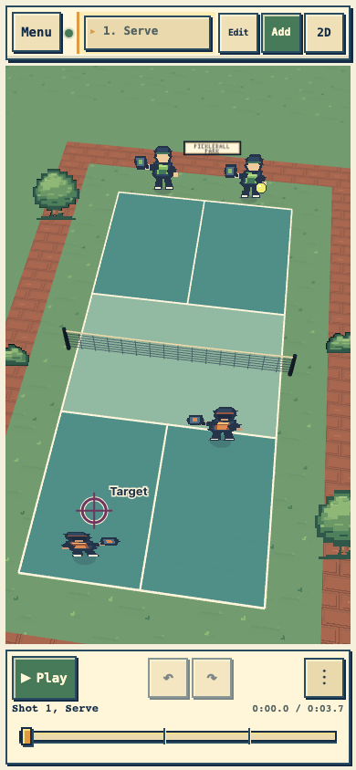
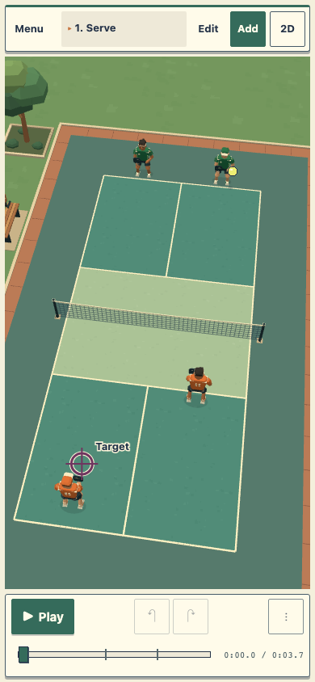
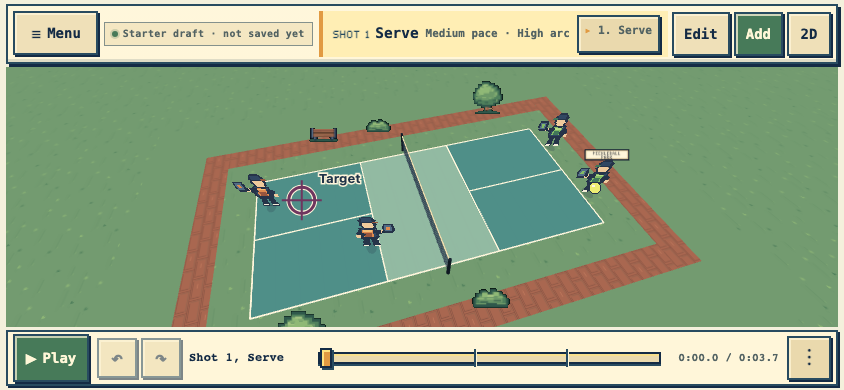
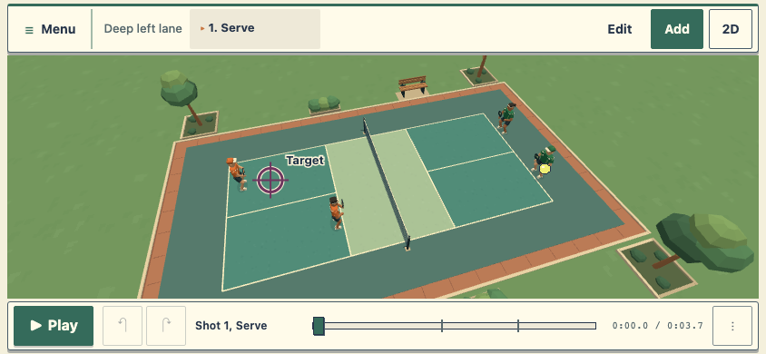
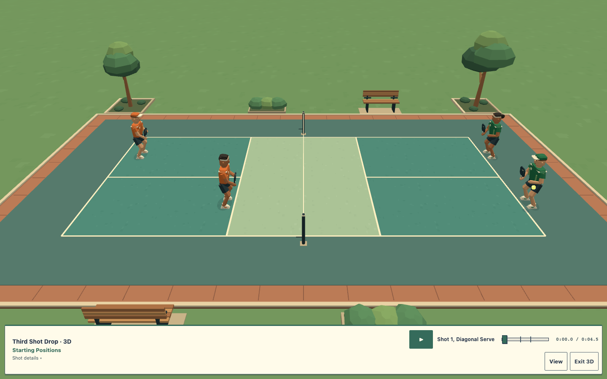
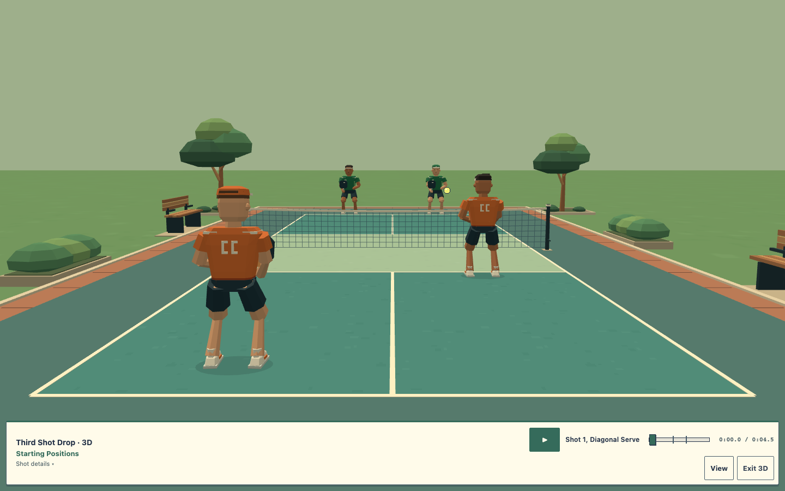

Normal builder · Desktop
Before · original local Smart Rally source fc46c60
After · dimensional athletes and compact ivory controls
Normal builder · Phone portrait
Before · 390 × 844
After · 390 × 844
Normal builder · Phone landscape
Before · 844 × 390
After · 844 × 390
Motion · Four representative plays
Serve and return, third-shot drop, third-shot drive, and fifth-shot drop. Contact holds precede playback so preparation, contact and recovery can be inspected. All eight supported plays receive separate geometry, framing and offline checks.
Camera and contact
Sideline · physical bodies and paddles
Behind orange · readable contact